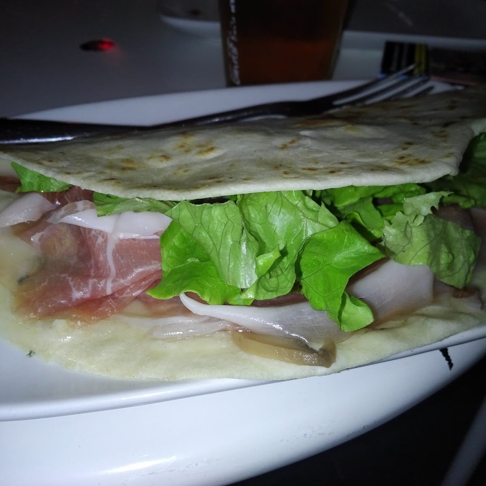

La tua amichevole birreria di quartiere
Crea la tua piadina.
Nelle recensioni la parola «piadine» compare centosettantuno volte. Il resto lo fanno i taglieri, le birre e i tavolini in piazza — aperti fino all'una.
4,5 su 1.015 recensioni

Come funziona
Si parte dalla sfoglia
e si sceglie cosa metterci
Il nome del locale è una battuta francese — «io sono prosciutto» — e il logo è un maialino. Il menù completo, con tutte le farciture, è quello in cassa.
Per l'aperitivo
I taglieri
Una recensione li chiama «super chicca»: salumi affettati, crostini e una salsa, portati al tavolo per accompagnare la birra. È il modo in cui qui si comincia la serata.
Il locale è piccolo e informale, e in piazza ci sono i tavolini: d'inverno il gazebo si chiude con i teli, d'estate si sta fuori.
Da bere
Birre alla spina, in bottiglia
e la lista dei cocktail
La scelta di birre è ampia — è la cosa che i clienti citano più spesso dopo le piadine. Questi invece sono i prezzi dei cocktail, presi dalla loro lista.
- Spritz · Aperol, Campari, Hugo5 €
- Negroni sbagliato · Americano8 €
- Dark and Stormy8 €
- Negroni · Boulevardier9 €
- Mojito · Cuba Libre9 €
- Moscow e London Mule9 €
- Margarita · Paloma · Tequila Sunrise9 €
- Long Island · Japanese Ice Tea9 €
- Bloody Mary · Godfather · Sex on the Beach9 €
Le parole dei clienti
Cinque, prese così come sono
«Locale amichevole, informale e carino. Birre e piadine top. Servizio tutto ok.»
Lore Z. · Google
«Super chicca: taglieri di salumi portati come aperitivo»
Google
«Birra e panini buonissimi e proprietario tenero e simpatico!»
Google
«Proprietari e personale simpatici e sempre disponibili, vasta scelta di birre»
Google
«It's all very tasty, and around the neighborhood, the prices are reasonable enough.»
Ekin · Google
Dove siamo
Piazza della Trivulziana 4
Bicocca, in una piazza pedonale a pochi passi dall'Università e dagli Arcimboldi. I tavolini sono lì davanti.
Aperto ora
- lunedì12:00 – 01:00
- martedì12:00 – 01:00
- mercoledì12:00 – 01:00
- giovedì12:00 – 01:00
- venerdì12:00 – 01:00
- sabato12:00 – 01:00
- domenicachiuso
Si mangia sul posto o si ritira all'esterno. La consegna a domicilio non è disponibile.
La mappa è di Google: aprendola, Google riceve il tuo indirizzo IP e può usare i suoi cookie.
Domande frequenti
Fino a che ora siete aperti?
Da lunedì a sabato dalle 12:00 all'una di notte. La domenica è chiuso.
Come funziona «crea la tua piadina»?
Si sceglie cosa mettere dentro: i salumi, i formaggi, le verdure e le salse. La piadina viene farcita al momento.
Si sta fuori?
Sì: ci sono i tavolini in piazza della Trivulziana, che è pedonale, e un gazebo che d'inverno si chiude con i teli.
Fate asporto o consegna?
Si può ritirare all'esterno. La consegna a domicilio invece non è disponibile.
Quanto costano i cocktail?
Spritz, Campari e Hugo 5 euro. Negroni sbagliato, americano e dark and stormy 8 euro. Gli altri della lista 9 euro.